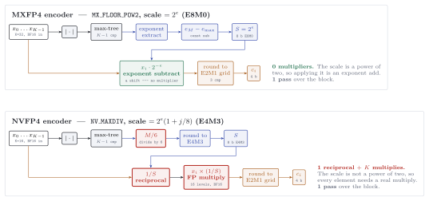
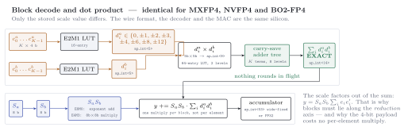

Block-scaled formats
A $12{:}1$ dynamic range covers nothing on its own, so deployed FP4 always travels with a shared scale over a small block — floating point wrapped around fixed point's oldest idea, the agreed scale factor.
The scale rule, and why it is what it is
xpuFP.block_scale — Function
block_scale(bf::BlockFormat, x) -> Float64Choose the shared scale for block x according to bf.rule, already quantized onto the scale format.
E4M3 spans only about 0.002 … 448. Applied to raw data outside that window its scale would round to zero or saturate, so this function falls back to power-of-two alignment in that case. reconstruct avoids the situation entirely by dividing through by tensor_scale first, which is what deployed NVFP4 does.
For MX_FLOOR_POW2 this implements S = 2^(⌊log₂ max|xᵢ|⌋ − e_max), which is provably the unique power of two landing the block maximum in the element grid's top binade — one step larger strands the maximum an octave low (wasting the top codes and doubling the effective step for every element), one step smaller guarantees the block's most energetic value saturates.
xpuFP.elem_emax — Function
elem_emax(bf::BlockFormat) -> IntThe binade of the element format's largest representable value — ⌊log₂ 6⌋ = 2 for E2M1, ⌊log₂ 448⌋ = 8 for E4M3. This is the −2 in the MX scale formula: the rule aligns the data's top octave with the grid's top octave, and the constant is nothing but −e_max.
$S = 2^{\lfloor\log_2 M\rfloor - e_{\max}}$ is the unique power of two landing the block maximum in the element grid's top binade: $M/S = 4f \in [4,8)$. One step larger strands the maximum an octave low — wasting the codes 4 and 6, and doubling the effective grid step for every element. One step smaller guarantees the block's most energetic value saturates.
Encoding
The two shipped schemes differ only in how the scale is chosen and, as a consequence, in what applying it costs. MXFP4's scale is a power of two, so it is applied with an exponent subtract; NVFP4's is not, so every element needs a real multiply and the block needs a reciprocal.

Read the coloured boxes as the cost story: green is free (a shift), red is a multiplier. MXFP4's encoder contains no multiplier at all — a fact easy to lose, because the scheme is usually introduced as the cheaper format on quality grounds rather than encoder grounds. See BO2_BRACKET in Improved FP4 schemes for an encoder that keeps NVFP4's wire format and quality while dropping the multiplier again.
xpuFP.quantize_block — Function
quantize_block(bf::BlockFormat, x) -> QuantizedBlockEncode one block: choose the shared scale, divide every element by it, round onto the element grid, and store.
julia> qb = quantize_block(MXFP4, [0.11, -0.35, 0.02, 0.24]);
julia> qb.scale, qb.elements
(0.0625, [2.0, -6.0, 0.5, 4.0])
julia> qb.values
4-element Vector{Float64}:
0.125
-0.375
0.03125
0.25xpuFP.quantize_blocked — Function
quantize_blocked(bf::BlockFormat, x) -> Vector{QuantizedBlock}Split a long vector into consecutive blocks of bf.K and encode each. A trailing partial block is encoded at its own (shorter) length.
xpuFP.reconstruct — Function
reconstruct(bf::BlockFormat, x) -> Vector{Float64}Block-quantize x and immediately decode: the round trip D(E(x)), which is what every SNR measurement in this package compares against the original.
reconstruct(f::RotatedBlockFormat, x) -> Vector{Float64}Rotate each block, quantize, decode, and rotate back. Blocks shorter than K at the tail are passed through unrotated, since the rotation is only defined at full length.
xpuFP.dequantize — Function
dequantize(qb::QuantizedBlock) -> Vector{Float64}The reconstruction x̂ᵢ = S · eᵢ.
The window theorem
xpuFP.dead_zone_threshold — Function
dead_zone_threshold(qb::QuantizedBlock) -> Float64Elements below this magnitude are stored as exact zero — information annihilated.
From the alignment proof S ∈ (M/8, M/4], so the round-to-zero threshold S/4 lies in (M/32, M/16]. Any element with |xᵢ| ≤ M/32 therefore lies below every possible threshold and cannot survive.
xpuFP.good_zone_threshold — Function
good_zone_threshold(qb::QuantizedBlock) -> Float64Elements above this magnitude reconstruct to within 1/3 relative error (the sawtooth's worst midpoint). Equals 3M/32 for MXFP4.
xpuFP.zeroed_count — Function
zeroed_count(qb::QuantizedBlock) -> IntHow many elements came back as exact zero having gone in nonzero.
This is the acceptance test for MXFP4, not the block ℓ₂ error. Three very different blocks — Gaussian, Gaussian with one 64× outlier, and a 4096× log-spread — all report a comfortable ~10% ℓ₂ error while silently zeroing 3, 31, and 21 of their 32 elements. Judge blocks by this count and the per-element profile; keep ℓ₂ for comparing formats, never for verdicts.
An MX block faithfully represents only what lives within about 21–30 dB of its own absolute maximum. Everything below $M/32$ comes back as exact zero.
Three very different blocks — Gaussian, Gaussian with one $64\times$ outlier, and a $4096\times$ log-spread — all report a comfortable $\sim10\%$ ℓ₂ error while silently zeroing 3, 31 and 21 of their 32 elements. Judge blocks by zeroed_count and the per-element profile.
Arithmetic
Every block format in this package decodes and multiplies through the same datapath. Only the stored scale value differs; the wire format, the element lookup, the exact integer core and the accumulator are the same silicon.

Two properties are worth reading off the figure. The ap_int<14> core is exact — K products of ap_int<9> bounded by K·144 = 4608, so nothing rounds in flight. And the scale factors out of the sum entirely, y = S_a S_b Σ_i e_i e'_i, which is why one multiply is needed per block rather than per element — and why blocks must lie along the reduction axis.
xpuFP.block_dot — Function
block_dot(bf::BlockFormat, a, b; accumulate=FP32) -> BlockDotResultDot product of two block-quantized vectors, computed the way MX hardware does it.
Both operands are cut into matching blocks of bf.K along the shared reduction axis. Within a block the scales factor straight out:
\[y = \sum_i (S_a e^a_i)(S_b e^b_i) = S_a S_b \sum_i e^a_i e^b_i\]
so the inner loop runs on tiny exact multiplies feeding an adder tree that is provably free of rounding, and the two scale bytes add once per block.
julia> a = [0.11, -0.35, 0.02, 0.24]; b = [1.3, 0.7, -2.1, 0.44];
julia> r = block_dot(BlockFormat("mx4", 4, E2M1, E8M0, MX_FLOOR_POW2), a, b);
julia> r.core_sum, r.scale_product, r.value
(-1.0, 0.03125, -0.03125)
julia> r.products_exact
truexpuFP.block_gemm — Function
block_gemm(bf::BlockFormat, A, B; accumulate=FP32) -> Matrix{Float64}Matrix product with both operands block-quantized along the shared k axis:
\[C_{jl} = \sum_\beta S^A_{j\beta} S^B_{\beta l} \sum_{i} e^A_{j\beta i} e^B_{\beta l i}\]
Weights are quantized once (rows of A), activations per fresh block (columns of B). The scale fixups add n/K multiplies to n MACs — a 3.1% arithmetic overhead at K = 32 for the entire two-level machinery.
xpuFP.core_sum_bound — Function
core_sum_bound(bf::BlockFormat) -> Float64The provable ceiling on |Σᵢ eᵃᵢeᵇᵢ| within one block: K · max(elem)².
For MXFP4 that is 32 × 6 × 6 = 1152 — a value that fits in a dozen integer bits plus two fraction bits, which is precisely why the block's adder tree can be plain narrow fixed point with no rounding anywhere.
The whole design rests on one factorisation:
\[y = \sum_i (S_a e^a_i)(S_b e^b_i) = S_a S_b \sum_i e^a_i e^b_i\]
so the scales never enter the inner loop. The core sum is bounded by $K \times 6 \times 6 = 1152$, which fits in a dozen integer bits plus two fraction bits — so the adder tree is plain narrow fixed point with no rounding anywhere.
Cost
xpuFP.bits_per_element — Function
bits_per_element(bf::BlockFormat) -> Float64Storage cost per value including the amortised block scale: nbits(elem) + nbits(scale)/K. 4.25 for MXFP4, 4.5 for NVFP4.
xpuFP.bits_per_block — Function
bits_per_block(bf) -> IntxpuFP.storage_bytes — Function
storage_bytes(bf::BlockFormat, nvalues) -> Float64Bytes needed to store nvalues values, scales included.
julia> storage_bytes(MXFP4, 4096*4096) / 1e6 # a transformer's workhorse layer
8.912896storage_bytes(f::FloatFormat, nvalues) -> Float64
xpuFP.compression_ratio — Function
compression_ratio(bf::BlockFormat, f::FloatFormat = FP32) -> Float64How many times smaller bf is than f. 7.53× for MXFP4 against FP32, 3.76× against FP16 — and since LLM token generation is memory-bound, that compression is to first order a proportional decode speedup, before the 144×-smaller multipliers are even counted.
xpuFP.scale_fixup_overhead — Function
scale_fixup_overhead(bf::BlockFormat) -> Float64Fraction of extra arithmetic the block scales cost: one fixup per K MACs, i.e. 1/K. 0.031 for MXFP4.